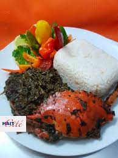

Diri Lalo

Haitian rize and Lalo- jute leaves
Haitian soup joumou is widely eaten on january first every year to commemorate Haitian independeence day.
ingredients
- Rize
- Lalo- jute leaves
- Crabes
- Haitian Seasoning
- onions, garlic
Steps
- cook the meat first
- wash and cut down the leaves
- cook oions and garlic
- Cook them for about 2 minutes, stirring occasionally,
or until the vegetables soften and the garlic
- Add the tomatto paste
- seasoning
home page